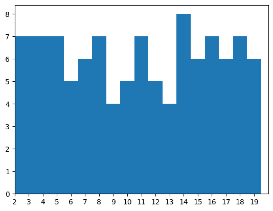
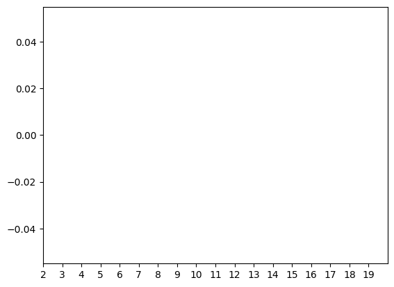
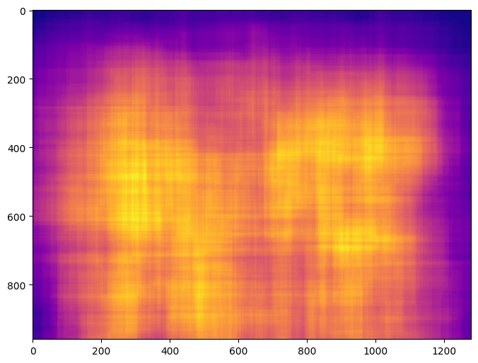
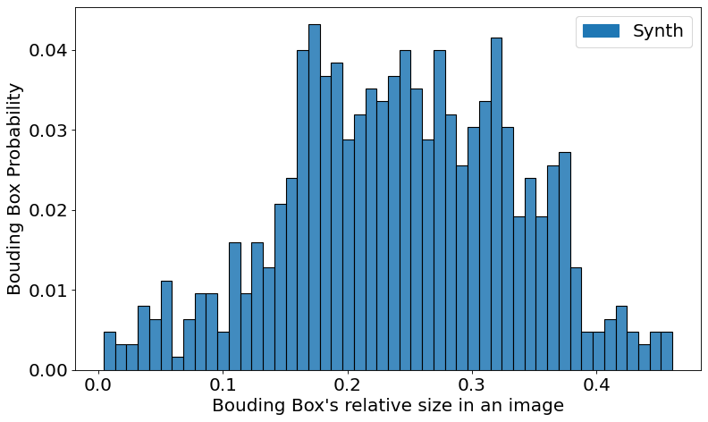
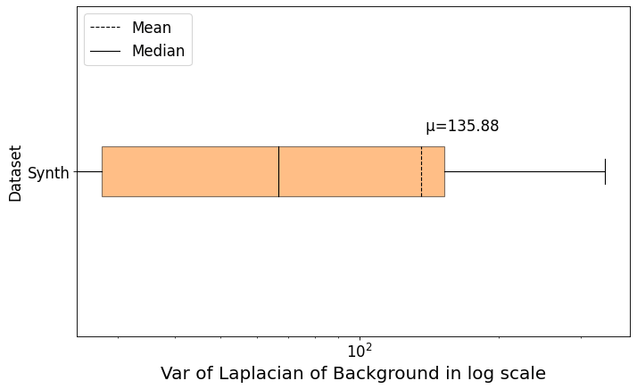
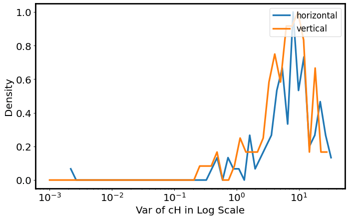
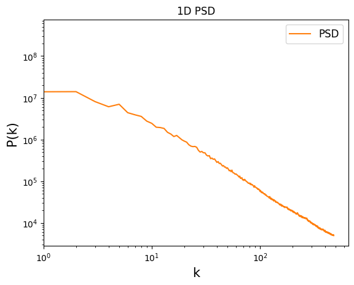
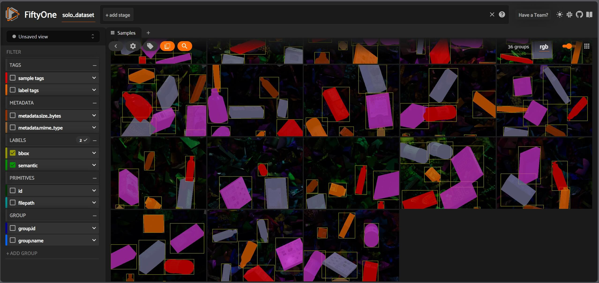
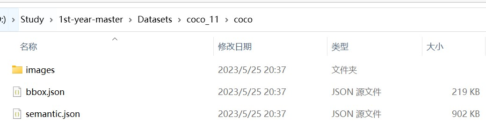

正文
Pysolotools Overview
安装环境：
conda create -n pysolotools_env python=3.8
conda activate pysolotools_env
pip install pysolotools -i https://pypi.tuna.tsinghua.edu.cn/simple
pip install jupyter从 Unity-Technologies/pysolotools: Python toolchain for SOLO. (github.com) 下载仓库，cmd 中转到该目录下，打开 Jupyter Notebook：
jupyter notebook打开 examples/SOLO_Statistics.ipynb：
{kind=link}
将 data_dir_path 里的值设置为所合成数据集的路径，开跑！
import matplotlib.patches as mpatches
import matplotlib.pyplot as plt
import numpy as np
import pandas as pd
import seaborn as snsfrom pysolotools.consumers.solo import Solo
from pysolotools.stats.analyzers.image_analysis_analyzer import (
LaplacianStatsAnalyzer,
PowerSpectrumStatsAnalyzer,
WaveletTransformStatsAnalyzer,
)
from pysolotools.stats.analyzers.bbox_analyzer import (
BBoxHeatMapStatsAnalyzer,
BBoxSizeStatsAnalyzer,
BBoxCountStatsAnalyzer
)
from pysolotools.stats.handler import StatsHandlerInitialize SOLO object
data_dir_path = r"XXXX"
solo = Solo(data_dir_path)Object Detection Stats
BBoxCountStatsAnalyzer类用于分析检测结果中 bounding box（边界框）的数量。这个类接受一个 Solo 对象作为参数，该对象包含了所有的检测结果，即一系列目标检测的 bounding box 区域。通过bbox_count_analyzer对象，可以获得检测结果中 bounding box 的数量统计信息，例如最小值、最大值、平均值和方差等。BBoxSizeStatsAnalyzer类用于分析检测结果中 bounding box 的大小分布情况。它没有接受参数，可以用于任何包含 bounding box 信息的数据集。通过bbox_size_analyzer对象，可以获得检测结果中 bounding box 大小的统计信息，例如最小值、最大值、平均值和方差等。BBoxHeatMapStatsAnalyzer类用于生成针对检测结果中 bounding box 的热图。它也没有接受参数，可以用于任何包含 bounding box 信息的数据集。通过 bbox_hmap_analyzer 对象，可以将检测结果中 bounding box 的位置信息映射到一张图片上，并且可视化出 bounding box 的密度分布情况。
bbox_count_analyzer = BBoxCountStatsAnalyzer(solo)
bbox_size_analyzer = BBoxSizeStatsAnalyzer()
bbox_hmap_analyzer = BBoxHeatMapStatsAnalyzer()StatsHandler类可以接受一个包含统计信息的 Solo 对象作为参数，并提供了 handle 方法用于处理分析器（Analyzer）列表。在本例中，StatsHandler 对象的参数是 solo，即目标检测结果数据集。另外，handle 方法接受一个 Analyzer 对象列表作为参数，分别是 bbox_count_analyzer、bbox_hmap_analyzer 和 bbox_size_analyzer。handle方法返回一个结果对象，其中包含了以一定形式储存的三种分析器的统计信息数据。例如，bbox_count_analyzer 可以输出 bounding box 数量的最大值、最小值和平均值，bbox_hmap_analyzer 可以输出 bounding box 密度热力图数据，bbox_size_analyzer 可以输出 bounding box 大小的统计信息。result 就是这些统计信息的集合。
# 这段代码使用 StatsHandler 对象对前文定义的三个分析工具进行处理，并返回处理结果。
stats_handler = StatsHandler(solo)
result = stats_handler.handle([bbox_count_analyzer, bbox_hmap_analyzer, bbox_size_analyzer])SOLO Metadata
print(f'Total Sequences: {solo.metadata.totalSequences}')
print(f'Total Frames: {solo.metadata.totalFrames}')
print(f'Frames Per Sequence: {solo.metadata.totalFrames / solo.metadata.totalSequences}')Total Sequences: 100
Total Frames: 100
Frames Per Sequence: 1.0
Categories in Dataset
categories = solo.categories()
categories_df = pd.DataFrame.from_dict(categories, orient="index")
categories_df.columns = ['Label']
categories_df| Label | |
|---|---|
| 1 | drink_whippingcream_lucerne |
| 2 | lotion_essentially_nivea |
| 3 | craft_yarn_caron_01 |
| 4 | cereal_cheerios_honeynut |
| 5 | candy_minipralines_lindt |
| 6 | pasta_lasagne_barilla |
| 7 | drink_greentea_itoen |
| 8 | snack_granolabar_naturevalley |
| 9 | snack_biscotti_ghiott_01 |
| 10 | cleaning_snuggle_henkel |
#### Objects in Dataset这段代码使用了前面统计分析工具的结果对象 bbox_counts，并基于此对数据集中 bounding box 的数量分布进行可视化：
# 用于获取统计分析工具 BBoxCountStatsAnalyzer 的结果对象 bbox_counts
bbox_counts = result["BBoxCountStatsAnalyzer"]
# 获取数据集中 bounding box 的总数
print(f'Total count of objects in dataset: {bbox_counts.get_total_count()}')
# 指定 frame_list 为展示帧列表来获得每一帧中 bounding box 的数量分布情况
# 由于针对所有视频帧进行可视化过于繁琐，因此在这里仅展示了2-20帧的数据
end = min(20, solo.metadata.totalFrames)
frame_list = list(range(2, end))
frame_counts = bbox_counts.get_count_per_frame(frame_list)
x, y = frame_counts.keys(), frame_counts.values()
fig, ax = plt.subplots(1, 1)
ax.bar(x, y, width=1)
ax.set_xlim(2, end)
plt.xticks(frame_list)
print("\nObjects Per Frame:")
plt.show()
Total count of objects in dataset: 625
Objects Per Frame:
{kind=link}

下一张图显示了每个帧中有多少特定对象，在这种情况下，我们正在寻找“cereal_cheerios_honeynut”标签类别。
这里应该在生成数据集的时候哪里出错了，emmm啥也没有。
k = list(categories.keys())
frame_counts = bbox_counts.get_count_per_frame(frame_list, [k[0]])
x, y = frame_counts.keys(), frame_counts.values()
fig, ax = plt.subplots(1, 1)
ax.bar(x, y, width=1)
ax.set_xlim(2, end)
plt.xticks(frame_list)
print(f"\n{categories[k[0]]} Per Frame:")
plt.show()cereal_cheerios_honeynut Per Frame:
{kind=link}

BBox Heatmap
这段代码使用了前面统计分析工具的结果对象 bbox_heatmap，并基于此对 bounding box 的热图进行可视化。其中，bbox_heatmap_norm 用于将原始数据映射到 0-1 范围内，便于可视化。
# 获取统计分析工具 BBoxHeatMapStatsAnalyzer 的结果对象 bbox_heatmap
bbox_heatmap = result["BBoxHeatMapStatsAnalyzer"]
# 将原始数据归一化到 0-1 范围内
bbox_heatmap_norm = bbox_heatmap / bbox_heatmap.max()
# 使用 Matplotlib 库的 imshow() 函数将 bbox_heatmap 可视化为热图
# 其中 cmap 参数用于指定热图的颜色映射方案，这里使用了 "plasma" 方案
fig, ax = plt.subplots(dpi=100, figsize=(8,8))
pcm = ax.imshow(bbox_heatmap_norm[:,:,0], cmap="plasma", )
plt.show()这段代码使用了 bbox_heatmap 对象中的数据统计结果，以可视化的方式展示了 bounding box 密度分布情况。这个可视化手段可以帮助用户更好地了解数据集中目标检测结果的分布密度情况。
{kind=link}

Bounding Box Size Distribution
# 用于获取统计分析工具 BBoxSizeStatsAnalyzer 的结果对象 bbox_size_dist
bbox_size_dist = result["BBoxSizeStatsAnalyzer"]
# 用于构造一个二维列表 bbox_size
# 其中每个元素表示一个 bounding box 的大小（即长度或宽度），类型为 "Synth"，权重为该大小所占比例
bbox_size = [[x, "Synth", 1/len(bbox_size_dist)] for x in bbox_size_dist]
# 使用 pandas 库的 DataFrame() 函数将 bbox_size 转换为 DataFrame 类型数据，并指定好列名
df = pd.DataFrame(bbox_size, columns =['val', 'type', 'w'])
# 使用 seaborn 库的 histplot() 函数绘制直方图
fig, ax = plt.subplots(dpi=80, figsize=(10,6))
sns.histplot(data=df, x="val", hue="type", weights='w',
bins=50, multiple="layer", alpha=.85, ax=ax, legend=None)
# where some data has already been plotted to ax
handles, labels = ax.get_legend_handles_labels()
# manually define a new patch
colors = plt.rcParams['axes.prop_cycle'].by_key()['color']
patch1 = mpatches.Patch(color=colors[0], label='Synth')
handles.append(patch1)
plt.legend(handles=handles, fontsize=18)
# 手动定义一个新的图例来替换原有的图例
ax.set_xlabel("Bouding Box's relative size in an image", fontsize=18)
ax.set_ylabel("Bouding Box Probability", fontsize=18)
ax.yaxis.set_tick_params(labelsize=18)
ax.xaxis.set_tick_params(labelsize=18)
fig.tight_layout()
plt.show(){kind=link}

Initialize Analyzers and Handler
这段代码使用了三个不同的图像分析工具，分别对一个图像进行处理，并将它们的结果传递给 StatsHandler 处理器进行统一处理。这个手段可以帮助用户更全面地了解图像的本质特征
# 对图像 solo 进行拉普拉斯算子处理，获取其图像增强的结果，并保存到 laplacian_analyzer 对象中
laplacian_analyzer = LaplacianStatsAnalyzer(solo)
# 对图像 solo 进行功率谱密度分析，获取其频谱信息，并保存到 psd_analyzer 对象中
psd_analyzer = PowerSpectrumStatsAnalyzer(solo)
# 对图像 solo 进行小波变换处理，获取其变换后的系数信息，并保存到 wavelet_analyzer 对象中
wavelet_analyzer = WaveletTransformStatsAnalyzer(solo)
stats_handler = StatsHandler(solo)
result = stats_handler.handle([laplacian_analyzer, psd_analyzer, wavelet_analyzer])Image Analysis Stats
bbox_var = result["LaplacianStatsAnalyzer"]["bbox_var"]
img_var = result["LaplacianStatsAnalyzer"]["img_var"]Laplacian
# 使用 plt.subplots() 函数创建一个包含单个子图的图形窗口 fig 和 axes 坐标系对象 ax
fig, ax = plt.subplots(dpi=80, figsize=(10,6))
# 使用 ax.boxplot() 函数绘制一个箱线图。
# 其中，bbox_var 表示绘制的数据，
# vert=0 表示水平展示，
# patch_artist=True 表示填充箱体颜色，
# labels=["Synth"] 表示 x 轴标签，
# showmeans=True 表示显示均值，
# meanline=True 表示画均值连线，
# showfliers=False 表示不显示异常值
box = ax.boxplot(bbox_var,vert=0,patch_artist=True,labels=["Synth"],
showmeans=True, meanline=True, showfliers=False,)
# 使用 plt.rcParams['axes.prop_cycle'].by_key()['color'] 获取默认调色板的颜色列表 colors，并为第一个箱体设置填充色和透明度
colors = plt.rcParams['axes.prop_cycle'].by_key()['color']
box['boxes'][0].set_facecolor(colors[1])
box['boxes'][0].set_alpha(0.50)
# 手动修改均值点、中位数点和坐标轴标签文本等样式。使用 box['medians'][0].set_color()、box['means'][0].set_color() 等方法设置样式
box['medians'][0].set_color('black')
box['means'][0].set_color('black')
x, y = box['means'][0].get_xydata()[1]
mean = np.array(bbox_var).mean()
text = ' μ={:.2f}'.format(mean)
ax.annotate(text, xy=(x, y+0.05), fontsize=15)
plt.plot([], [], '--', linewidth=1, color='black', label='Mean')
plt.plot([], [], '-', linewidth=1, color='black', label='Median')
# 使用 plt.legend() 函数添加图例，并设置坐标轴刻度、标签和标题等属性
plt.legend(fontsize=15, loc="upper left")
plt.xticks(fontsize=15 )
plt.yticks(fontsize=15 )
plt.xscale('log')
plt.xlabel(f"Var of Laplacian of Background in log scale", fontsize=18)
plt.ylabel("Dataset", fontsize=15)
plt.show(){kind=link}

Wavelet
这段代码用于对一个图像进行小波变换并对其水平和垂直方向的 cH 系数进行直方图分析，然后将两个方向的直方图绘制在同一个图表中。
hist_list = []
for coeff_type in ["horizontal", "vertical", "diagonal"]:
coeff = result["WaveletTransformStatsAnalyzer"][coeff_type]
hist = plt.hist(coeff, bins=np.logspace(np.log10(max([min(coeff), np.finfo(float).eps])), np.log10(max(coeff))))
hist_list.append(hist)
plt.close()
fig, ax = plt.subplots(dpi=80, figsize=(10,6))
colors = iter(plt.rcParams['axes.prop_cycle'].by_key()['color'])
for hist, hist_type in zip(hist_list, ["horizontal", "vertical",]):
norm_data = (hist[0] - min(hist[0]))/(max(hist[0])-min(hist[0]))
ax.plot(hist[1][1:],norm_data, linestyle='-', label=hist_type, linewidth=3, color=next(colors))
ax.set_xscale('log')
plt.legend(loc="upper right", fontsize=15)
plt.xlabel("Var of cH in Log Scale", fontsize=18)
plt.ylabel("Density", fontsize=18)
plt.xticks(fontsize=18)
plt.yticks(fontsize=18)
plt.setp(ax.spines.values(), linewidth=2.5)
plt.show(){kind=link}

Power Spectrum
这段代码用于计算一个图像的一维功率谱密度，使用可视化方式展示其频域特征。用户可以通过观察功率谱密度曲线来了解图像中不同频率成分所占比例的大小关系，以及在不同频率范围内的能量分布情况。
psd_1d = np.nanmean(result["PowerSpectrumStatsAnalyzer"], axis=0)
fig, ax = plt.subplots(dpi=100)
colors = (plt.rcParams['axes.prop_cycle'].by_key()['color'])
ax.plot(psd_1d, color=colors[1], label="PSD")
plt.legend(fontsize=12)
ax.set_xscale('log')
ax.set_yscale('log')
plt.ylabel("P(k)", fontsize=15)
plt.xlabel("k", fontsize=15)
plt.title("1D PSD")
plt.xlim([1, None])
plt.show(){kind=link}

Visualizing SOLO Datasets with Voxel51 and Pysolotools
安装 OpenEXR（巨难装）、pysolotools-fiftyone：
conda activate pysolotools_env
conda install -c conda-forge openexr-python
pip install openexr
pip install pysolotools-fiftyone开跑！
将生成的数据集放在一个文件夹中，不能有空格：D:\Study\1st-year-master\Datasets\solo_11。
终端输入：
pysolotools-fiftyone D:\Study\1st-year-master\Datasets\solo_11{kind=link}

Using Pysolotools to Convert From SOLO to COCO
本指南将引导您完成将数据集从 SOLO 格式转换为 COCO 格式的整个过程。我们将使用 Unity 的计算机视觉团队的 pysolotools 来完成这项任务。Pysolotools 是一个 Python 包，它提供了各种工具来处理、分析和转换使用 Perception 包生成的 SOLO 数据集。
solo2coco <SOLO_PATH> <COCO_PATH>这玩意好像很吃性能，把该关的都关了，不然很容易挂。之后就能得到 COCO 格式的数据集：
{kind=link}
